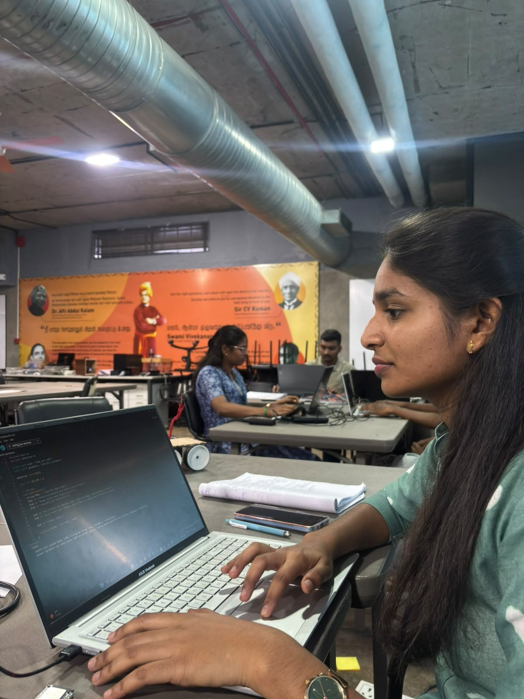
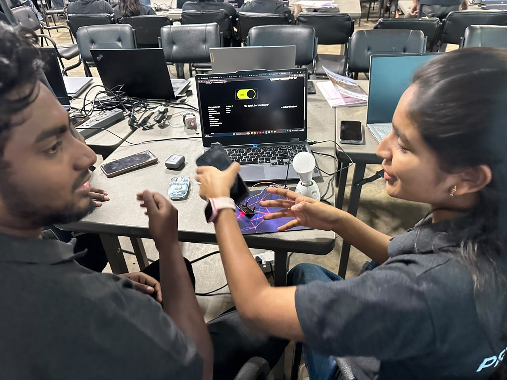

IoT Session — ESP32 & Connected Systems.
Hands-on practical Internet of Things (IoT) experiments executed on ESP32 microcontrollers. Click any task box below to open its dedicated page with complete source code, hardware circuit details, photos, and video demonstration.
ESP32 Wi-Fi & Bluetooth Dual-Core MCU
Developing connected embedded applications using the Arduino IDE framework, HTTP web servers, MQTT cloud protocols, Firebase cloud databases, and FreeRTOS task scheduling.

On / Off Inbuilt LED on ESP32
Programmed an embedded HTTP web server on ESP32 to wirelessly toggle the onboard built-in LED (GPIO 2) from a responsive web browser interface with real-time state feedback.

Adafruit IO Cloud MQTT & Soldered Hardware Control
Connected ESP32 to Adafruit IO MQTT broker (elaks_22/dashboards/bulb) to remotely toggle the AC bulb/actuator with real-time sync, paired with a custom-soldered perfboard circuit featuring tactile push-button override and transistor switching.

Voice Appliance Control (Google Assistant + IFTTT)
Implemented hands-free speech automation interfacing Google Assistant voice scenes ("Ok Google, activate lights on/off") via IFTTT webhooks to Adafruit IO, triggering a 4-channel optocoupler relay module connected to ESP32.

Creating Firebase Realtime Web Dashboard
Designed and developed "AuraIoT" — a responsive Google Firebase Realtime Database cloud dashboard with live DHT11 microclimate gauges, LDR ambient light automation engine, appliance relay controls, user auth, and CSV telemetry export.

Firebase Hardware: Bulb, DHT11, Button & ESP32
Assembled and deployed the physical IoT edge node: interfacing ESP32 with an AC light bulb, 5V optocoupled relay, DHT11 temperature/humidity sensor, analog LDR, and tactile push button synchronized bidirectionally with Google Firebase in real time.